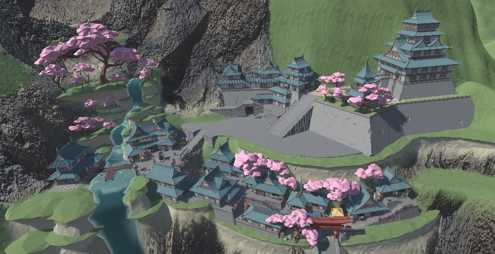
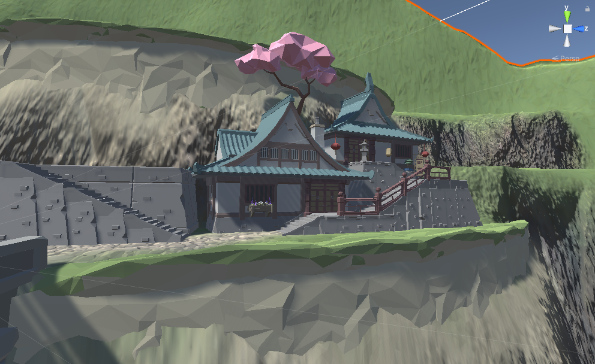
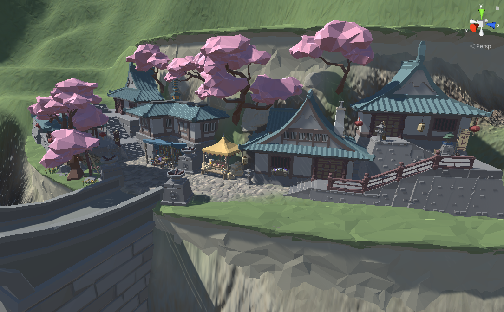
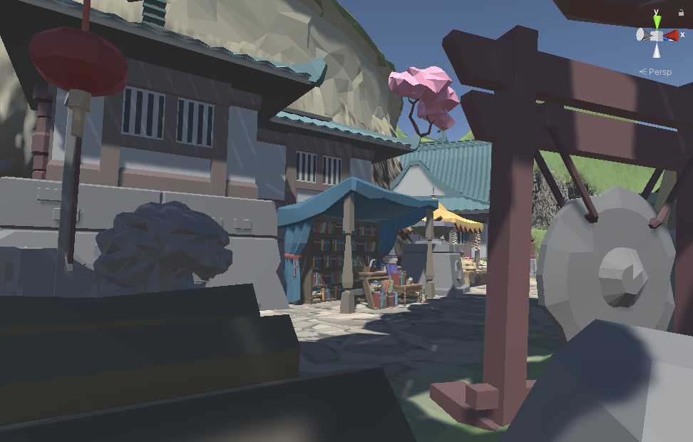
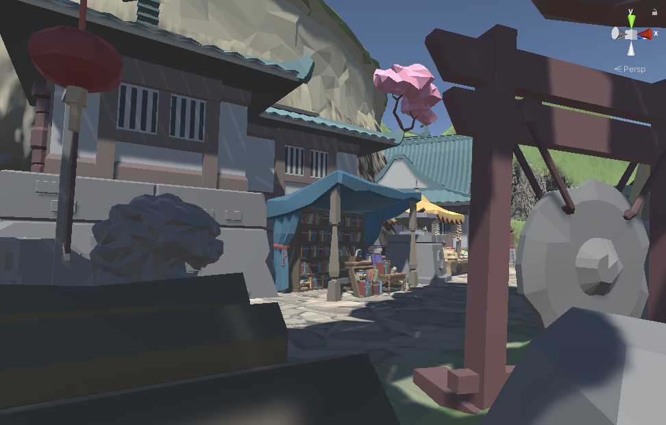

Tales of a Samurai
After finishing my first and a half years at the Amsterdam University of Applied Sciences and starting my Thematic Semester (Minor) I wasn't doing a whole lot of Game Development anymore, so I decided to start my very first solo project. Tales of a Samurai is an original idea by me. It's a storydriven one-way adventure game.
In this game the player experiences the story of a newly trained samurai making his way through the country, experiencing the countyside, helping people with tasks and ultimately returning to his home town with his new found skills and experiences.
DISCLAIMER: The assets are made by SYNTY Studios.
More media
 
 
